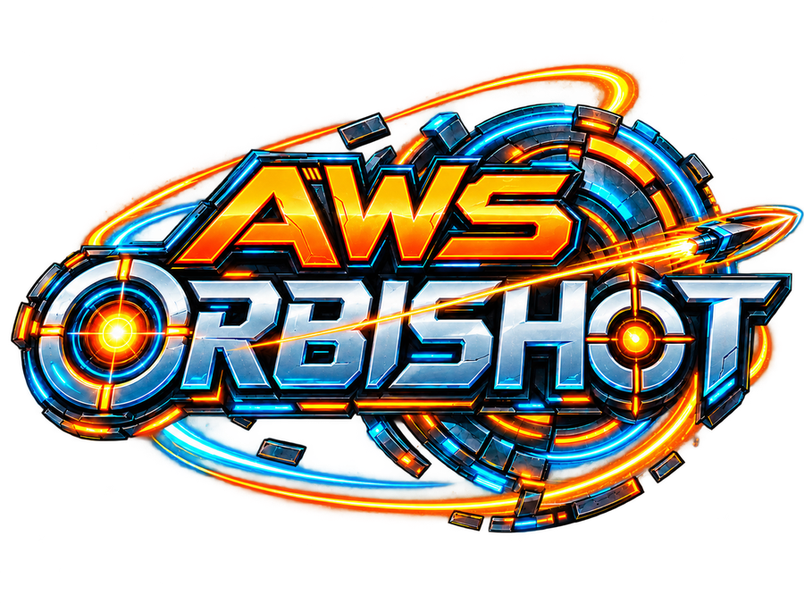

AWS ORBISHOT
Arcade web de timing y precisión con Boss Levels, Power Cores, Power-Ups, economía, vidas, tienda, música procedural y progresión.
Aplicaciones, videojuegos y proyectos personales desarrollados como parte de aprendizaje, experimentación y desarrollo continuo.
Cada proyecto mantiene su propio repositorio, historial, documentación y ciclo de desarrollo de manera independiente.

Arcade web de timing y precisión con Boss Levels, Power Cores, Power-Ups, economía, vidas, tienda, música procedural y progresión.
Proyecto independiente orientado a la gestión y organización de notas, actualmente mantenido en un repositorio privado.